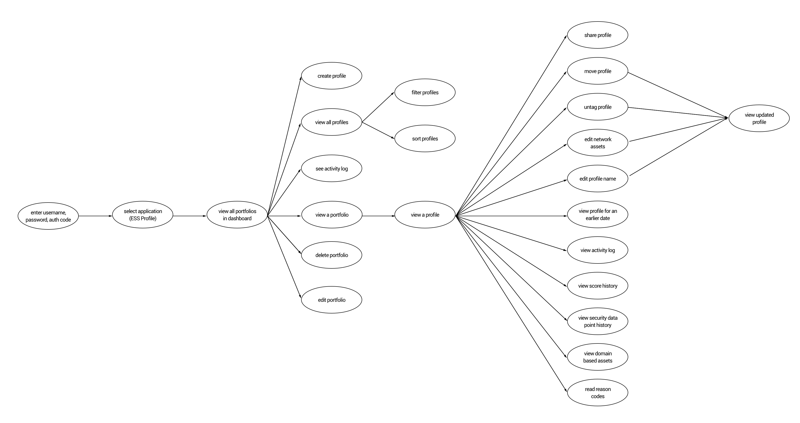
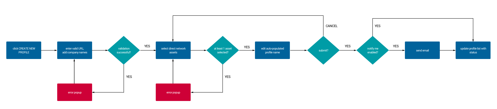
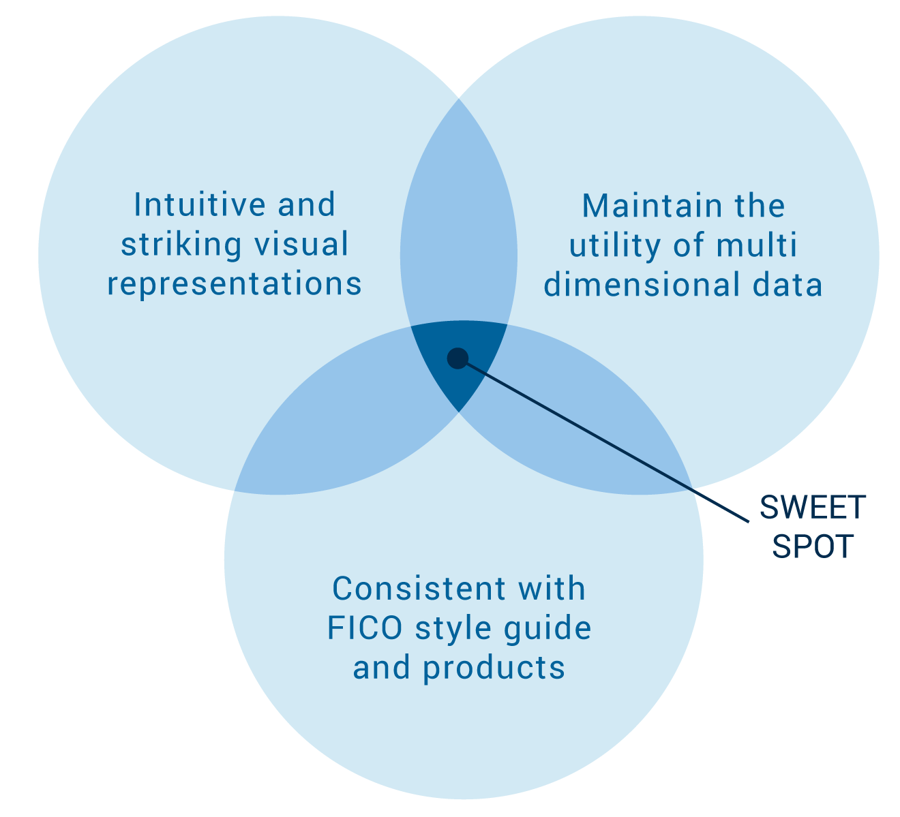
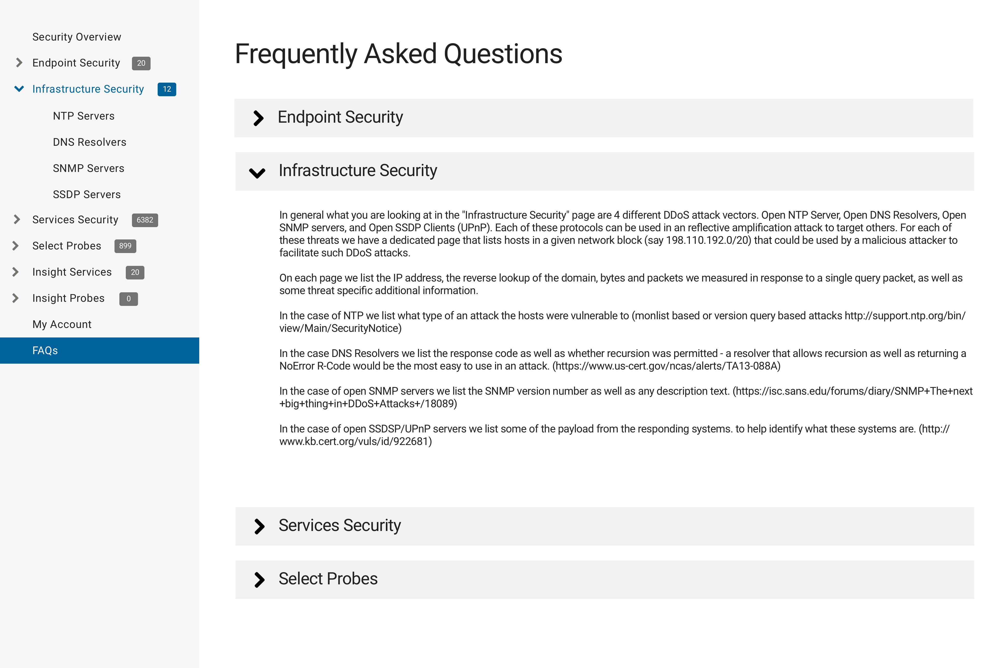
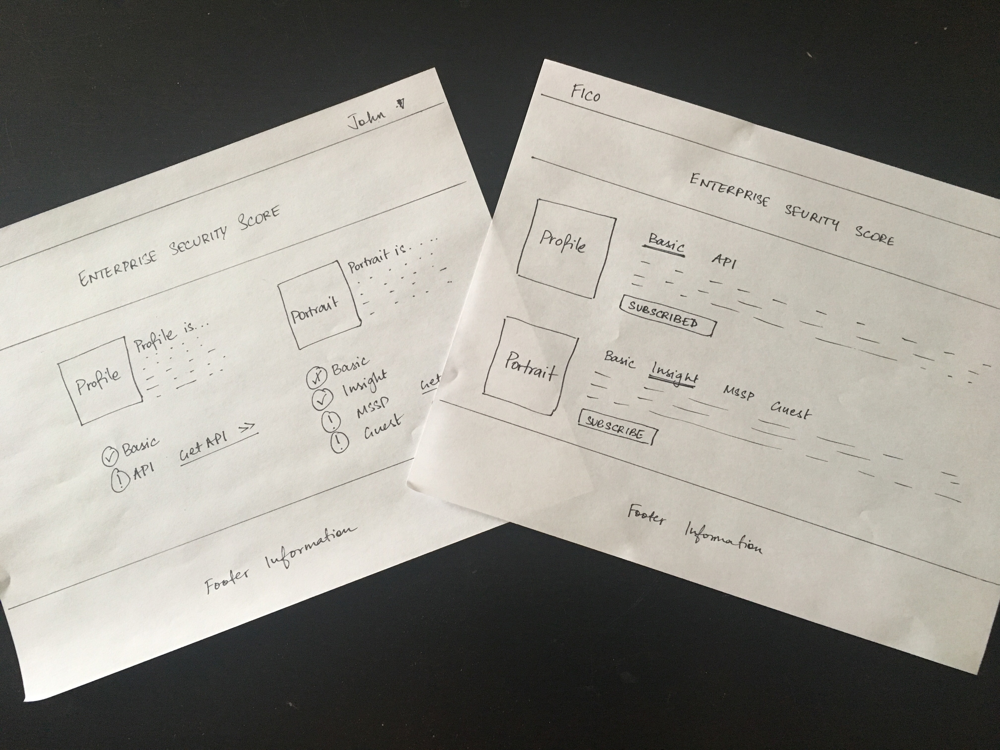
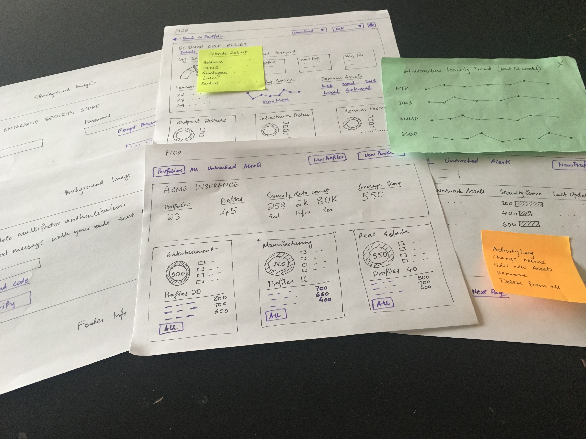

*To comply with my non-disclosure agreement, I have omitted confidential information and high-fidelity prototypes from this piece.*
The FICO Enterprise Security Score offers an easy-to-interpret metric that effectively measures cybersecurity risk exposure. The idea is to empower an organization to understand and strengthen its security posture, assess the network risk of vendors in its supply chain, and continuously monitor the long-term likelihood of a data breach. It leverages billions of data points from around the globe to deliver a transparent and predictive summary of enterprise cybersecurity assessment.
Read more at http://www.fico.com/en/products/fico-enterprise-security-scoring
My Role
Through summer 2016, I worked as a user experience intern to help redesign the recently acquired Quadmetrics Inc. web application into the FICO Enterprise Security Score web application. I worked on the design of two products in this suite: Profile and Portrait, both of which we simultaneously redesigned and developed.
- Drafted personas, scenarios, use cases and workflows.
- Created wireframes and interactions using Axure RP Pro.
- Created high-fidelity interactive prototypes using Sketch, Principle, and Framer.
- Designed icons for both the products: Profile and Portrait using Illustrator.
- Conducted usability tests over WebEx and analysed qualitative as well as quantitative data.
- Crafted a customer experience map leveraging the insights uncovered during the usability tests.
- Designed various marketing materials.
- Collaborated extensively with product managers, stakeholders, designers, and developers.
Understanding the Users
The planning phase mostly comprised of stakeholder interviews and meetings with the product manager to outline an overview of the product as well as delve into the finer nuances of customer and market research.
Being a strong believer of user-centered design, I wanted to really dive deep into the psyche of potential users and understand their behaviour. The users were mostly tech-savvy employees with a solid background in security. Since I was fairly new to this seemingly complex domain of cyber-security, I paired up with an analytics intern to really dive deep into their technical functions, familiarize myself with the jargon, and understand how they work.
Once I had tangible research data, I identified four distinct customer buckets in organizations that would use these applications. I created a primary and secondary persona for each product, focusing primarily on goals, motivations, and current pain-points. The emphasis during this phase was extensively on avoiding the elastic user and self-referential design.
- Entry-level Cybersecurity Analysts
- Chief Information Security Officers
- Cyber-Insurance Brokers
- Underwriters at insurance companies
As a team, we started meticulously crafting the main use cases, from the user’s point of view. We jotted down goals, the steps the user would take to complete a particular task, and the application’s response to the user’s actions. It helped us examine the complexity of the system and brainstorm on what could go wrong. We also fleshed out workflows for the major use cases to deliver smooth-flow task performance and try to avoid disruptions in the user’s experience.
We derived key insights from this phase that helped transform customer requirements into corresponding features for launch and beyond.
 Planning the Design Approach
The entire application was broken down into specific features that were implemented in parallel work streams. The design phase for each feature was an iterative process of sketching, wireframing and interactive prototyping while gaining consensus from the stakeholders and approval from the leadership. Once a design was finalized, it was handed over to the developers to implement. As we worked on the net feature in the pipeline, there was continual interaction with developers to ensure that the implementation aligned with the design.
A fixed launch date made it imperative to strike the right balance between customer goals and business goals. The focus was on ensuring that the pre-existing features of Quadmetrics were incorporated in the new design to ensure a seamless transition for existing customers. The high-level design strategy was basically finding the sweet spot between creating striking visual representations that were intuitive for the user to comprehend, while maintaining the utility of the data and adhering to a comprehensive style guide that FICO had in place.
We used all the previous research to delineate the sitemap that allowed an organized and easy-to-follow navigation. Once a basic outline of the website was in place, we started to dive into the design of individual pages. We followed an approach where we started designing from right to left of the sitemap, focusing on web pages at the granular level first, moving up towards the homepage.

Novice Vs. Experienced Users
We wanted to ensure that the application was user-friendly for first-time as well as experienced users. One of the features that I strongly advocated was search bar, which would make it easier for new users to find information and complete tasks. However, it was not a priority for the initial release due to the development effort required.
I started working on incremental fixes to this problem. First, I leveraged card-sorting with entry-level security analysts to understand how they viewed and organized information. This activity was a wealth of information to create intuitive names for sections, subsections, links, and res-structure the architecture to make it easier to navigate. I also created an easy-to-spot FAQ page that went into details of the application and illustrated some key interactions, similar to user-onboarding. Another feature that I incorporated was including an expandable link section in the navigation to better help novice users. Moreover, I included an information icon next to some technical jargon, that opened an onclick popup with additional help and resources. The entire agenda was to ensure that novice users had the option of knowing more, without annoying experienced users with seemingly obvious information.
Control or Variation?
We kicked off with the landing page, that would offer an entry point into the different applications in this suite. Essentially, we had two layouts that emerged from a group brainstorm. Both had icons to represent and launch the products. The subtle difference lay in the fact that the first (control) merely informed the user that the two products had advanced versions they hadn’t subscribed to (clean and minimal), while the second (variation) outlined an additional description of the features each of the advanced versions offered (text-heavy).
The development team brought these two designs to life in a test environment, and we performed A/B testing with users who had not seen the application before. We had an equal number of users test out the hypothesis that incorporating detailed information about advanced product versions will increase conversions. We observed that the variation garnered a higher conversion rate than the control. We noticed that detailing out advanced features that they were missing out on piqued their curiosity, as opposed to merely the knowledge of the existence of these versions.
Iterate, Iterate, Iterate!
We moved on to designing the granular elements. We wanted to ensure that the first element the user noticed would be the security score gauge, because we wanted the user to have an idea of the organization’s security posture right at the first glance on the profile. We also wanted to bring in consistency with other FICO products here, since this element would be highly conspicuous. So we decided to use the standard 300-850 score range with logical breakpoints as interpreted by the analytics team.
As we went on to design the rest of the organizational profile page, the focus was on a visual representation that would provide an at-a-glance overview of the security risk of that profile. We identified key security statistics and elements that would be of importance to the user and created views that would be familiar to a user in the cyber-security domain as well as maintain the utility of the data.
We then moved on to the portfolio page, the purpose of which was to logically group several profiles in a category, while providing a collated summary of the analytical security information of all these profiles. We kept going back to customer requirements to decide which security elements should be displayed on the summary ribbon to strike the right balance between a minimalistic view but useful data.
Next, we moved to the dashboard, which was an overview of all the portfolios that a broker or underwriter could logically organize profiles into, represented in the form of tiles. We brainstormed to determine the level of detail we wanted to display in each tile, with a focus on enough information to provide a quick summary of that portfolio, but not so much as to overload the user. After several discussions, we settled on providing a visual representation of the distribution of security scores for all the profiles within the portfolio and a list of top 3 profiles for that portfolio, arranged in descending order.
For all the pages, we iterated through several sketches to find the ones that achieved user goals and aligned with our design strategy. I created initial wireframes and interactions in Axure RP Pro to help the team visualize the experience. However, while presenting to higher-level stakeholders, I created interactive prototypes using Sketch, Principle and Framer. These also helped the developers in getting the interactions right down to the T.
There were several other tasks that I created user flows, wireframes, and interactive prototypes for:
- Setting up a new profile and portfolio.
- Filtering and sorting records on individual data pages.
- A variety of administration tasks such as CRUD operation for users, configuring alerts and reports, setting up network prefixes and domains, and customizing integrations.
- A variety of user tasks such as downloading CSV files, sending emails, and creating tickets.
- Workflows for forgot password and two-factor authentication.
- Designing a download-ready PDF version of all the complex information on the application.
Usability Testing
Once a stable version of the website was set up in the test environment, we decided to employ usability testing to identify potential usability issues. I initiated the process by identifying four existing users in different organizations, sorting each user into a persona and drafting a customized set of tasks. I conducted online usability tests with these participants via WebEx. I primarily tracked task completion rate, task completion time and error rate during these tests. I also used the System Usability Scale to quantify the experience of different users after interacting with the site.
Apart from usability testing, we also rolled out a beta version to existing customers and followed up with them to understand their response. We also dived into some web analytics data like clickthrough rate and scroll tracking to re-evaluate some design decisions. This research along with data from the usability tests was a catalyst that triggered the next version of the product.
The usability tests revealed that:
- Customers found the onboarding process to be rather tedious and confusing, with the need for more explicit instructions.
- Customers felt that navigating to specific data pages was time-consuming due to the lack of intuitive names.
- Customers were excited about the new features introduced.
Mapping the Customer Experience
With the qualitative data collected from the usability tests, I plotted the empathic experience of the user's journey that manifested into an illustrative experience map. The focus was on capturing specific thoughts and emotions while the user interacted with key features, and highlighting opportunities for improving the user-experience.

What did I learn?
- I reaped in significant exposure to the seemingly complex domain of cyber-security. I spent a lot of time interacting with stakeholders and customers in weeding out important information from heaps of cyber-security data, logically arranging data across webpages, and translating raw analytical data into intuitive visualizations, while still maintaining the utility of the data.
- I learnt how to adhere to a comprehensive style guide while designing wireframes and prototypes, to ensure that ideas and concepts are translated into outcomes consistent with the FICO brand.
- Since we were targeting a diverse range of technical and cyber-security knowledge in our customers, it was interesting to think about striking the right balance in information architecture and nomenclature. We wanted the UI to be intuitive enough for someone with little know-how, yet not appear to be over-simplifying things for a cyber-security-savvy customer.